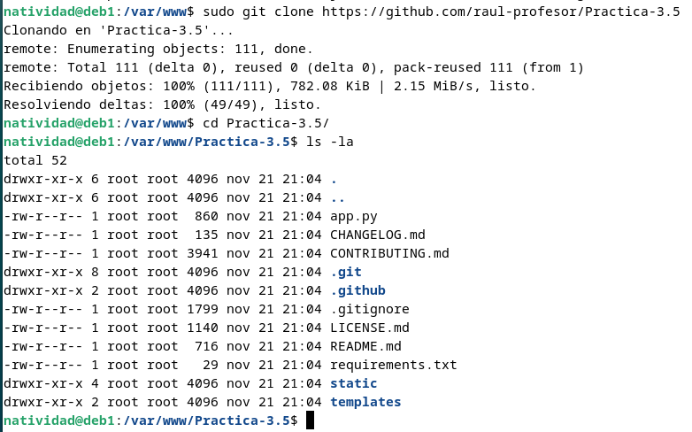

Natividad Márquez Baena
Práctica 3.5: Despliegue de una aplicación Flask (Python)
1.Prerrequisitos 2.Introducción 3.Procedimiento completo para el despliegue 4.Crear los archivos necesarios 5.Comprobación de gunicorn 6.Compronar gunicorn como servicio 7.Configurar nginx 8.Probar la aplicación y su ejecución 9.Repetir el proceso con un repositorio de github
Prerrequisitos
Para la práctica se deben partir de ciertos elementos previos, en un servidor Debian para realizar el despliegue:
Nginx: Servidor web para manejar las solicitudes y respuestas. Gunicorn: Servidor WSGI que conecta el servidor web con la aplicación Flask. Pipenv: Herramienta para gestionar entornos virtuales y dependencias en Python.
Introducción
El objetivo de esta práctica es aprender a desplegar una aplicación web desarrollada con Flask (Python) en un entorno de producción, utilizando herramientas como gunicorn, nginx y pipenv. Gunicorn se usa como servidor WSGI para manejar solicitudes y respuestas entre la aplicación y el servidor web. Nginx servirá como servidor web para gestionar el tráfico y servir la aplicación.
Por último con Pipenv se creará un entorno virtual. Se persigue garantizar un despliegue seguro, funcional y accesible en un entorno de producción.
Procedimiento completo para el despliegue
Primeramente se instala el gestor de paquetes de Python pip y tambien el servidor de aplicaciones gunicorn:

Comprobamos que se ha instalado correctamente la versión con:

Creamos el directorio en el que almacenaremos nuestro proyecto. Además, es importante otorgarle permisos a nuestro usuario y que pertenezca al grupo www-data. Con esto se permite que el servidor web y tu usuario puedan acceder y modificar los archivos del proyecto.Para ello se usa chown:

Ahora se va a crear la estructura del proyecto:
En el directorio creado, se creará un archivo oculto que contendrá las variables de entorno necesarias. En el archivo se añaden las variables de manera que una será el archivo pyy otra el entorno production.

Se crea un entorno virtual con pipenv shell para asegurar que las dependencias del proyecto no afecten al sistema actual.

A continuación se instalará Flask para desarrollar la aplicación, y Gunicorn para ejecutar la aplicación en un entorno de producción.

Crear los archivos necesarios
Ahora se crea la aplicación de ejemplo. Para ello se crea un archivo application.py con la lógica del proyecto y wsgi.py, que configura cómo se ejecutará Flask a través de Gunicorn.

Ahora se prueba el funcionamiento de la aplicación en el servidor web integrado de Flask y accedemos a la dirección que obtenemos:
 Como podemos comprobar, se puede acceder correctamente cpn
Como podemos comprobar, se puede acceder correctamente cpn http://IP-maq-virtual:5000:

Comprobación de gunicorn
Se comprueba que Gunicorn funciona correctamente, ya que actúa como intermediario entre Flask y Nginx en producción:gunicorn --workers 4 --bind 0.0.0.0:5000 wsgi:app
Es importante que se tome nota de cual es el path o ruta desde la que se ejecuta gunicorn para poder configurar más adelante un servicio del sistema. Esto se hace mediante el uso de which gunicorn:

Compronar gunicorn como servicio
Se va a hacer uso de nginx, por lo que se inicializa y se comprueba su estado.

Ahora que se ha iniciado, se crea un archivo de servicio de systemd para que gunicorn se ejecute como servicio del sistema, con el siguiente contenido:

Ahora se habilita e inicia el servicio creado

Hacemos un systemctl status para comprobar el estado del servicio y que funciona.

Configurar nginx
Se creará una archivo de configuración de nginx con el nombre de nuestra aplicación y se establece la siguiente configuración:
Se crea un link simbólico del archivo creado desde sitios webs disponibles a sitios web activos, es decir, del directorio sites-available a sites-enabled. Posteriormente lo comprobamos con un ls -l

Finalmente se comprueba si el archivo es correcto con sudo nginx -t y se reinicia nginx para posteriormente comprobar el estado de este.

Probar la aplicación y su ejecución
Ya no es posible acceder por IP a nuestra aplicación ya que ahora está siendo servida por Gunicorn y Nginx, necesitamos acceder por su server_name. Para ello se modifica el archivo /etc/hosts de nuestra máquina anfitriona para que asocie la IP de la máquina virtual, a nuestro server_name.
La ruta absoluta del archivo es C:\Windows\System32\drivers\etc\hosts
Y se deberán añadir la línea:
192.168.X.X myproject www.myproject

Ahora se debería de poder acceder a la aplicación desde la máquina anfitriona con http://www.nombre_aplicacion.

Repetir el proceso con un repositorio de github
En esta parte se repetirá el proceso con una aplicación de github. Para ello se clonará el siguiente repositorio git clone https://github.com/raul-profesor/Practica-3.5, del cual se obtendrán los paquetes necesarios. El repositorio se clonará en /var/www.

Se otorgan los permisos de la misma manera:
Ya en el directorio de la práctica, se arranca el entorno y se instalan las dependencias haciendo uso del archivo obtenido en el repositorio pipenv install -r requirements.txt.
Se comprueba la ejecución de la aplicación:

Y obtenemos el siguiente resultado.
Ahora se comprobará la aplicación localmente
Repitiendo los pasos anteriores, se configura gunicorn como servicio

Se comprueba el estado

Creamos un archivo de servicio con el siguiente contenido:
A continuación, se crea el archivo de configuración de nginx en el directorio de sitios disponibles

Se crea su enlace simbólico, se mueve al directorio se sitios activos y se comprueba que se ha realizado correctamente el proceso

A continuación se realiza la comprobación sobre la sintaxis de los archivos, se reinicia el servicio y se comprueba su estado
Como en el procedimiento anterios, se modificará el archivo /etc/hosts de la máquina anfitriona, donde añadiremos una línea para asociar el nombre del servidor con su IP.

Finalmente, deberíamos de poder acceder a la aplicación mediante la búsqueda con http://www.nombre_aplicacion.